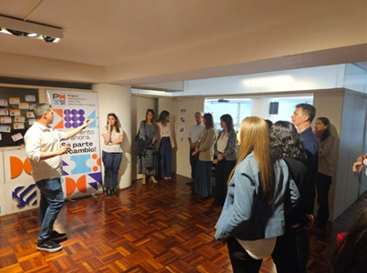

Ayudo a personas y organizaciones a mejorar el delivery de software haciendo visibles los sistemas, los patrones y las dinámicas humanas que impactan los resultados. Más de 15 años combinando Delivery Leadership, Transformación Ágil e Inteligencia Artificial.

Ayudo a personas y organizaciones a mejorar el delivery de software haciendo visibles los sistemas, los patrones y las dinámicas humanas que impactan los resultados.
Durante los últimos 15+ años trabajé con startups y grandes organizaciones, ayudando a los equipos a entregar con mayor predictibilidad mientras conecto la estrategia de negocio, la tecnología y el liderazgo.
Mi enfoque no consiste en implementar frameworks, sino en entender por qué el delivery se ralentiza, dónde surge la complejidad, y cómo crear las condiciones para que los equipos alcancen un alto desempeño.

Mi carrera empezó en soporte técnico y service desk, y avancé por cada rol de la mesa: Scrum Master, Agile Project Manager, Chapter Director y hoy Delivery Lead y coach independiente.
En el camino aprendí que ningún framework transforma nada por sí solo: lo que cambia una organización son las personas que aprenden a trabajar distinto. Por eso combino OKRs, Flight Levels, coaching 1:1 y PNL en cada proyecto.
Hoy trabajo con equipos y líderes que necesitan pasar de la ambigüedad a la ejecución, sin perder de vista a las personas en el camino.
Desde una consultoría de transformación completa hasta un taller puntual para tu equipo.
Diseño y ejecución de proyectos integrales de transformación ágil y delivery. Aplico frameworks como Scrum, Kanban, SAFe, OKRs y Flight Levels, combinados con estrategia de IA para mejorar el flujo y la ejecución.
Acompañamiento a equipos y líderes a través de coaching 1:1 y de equipo, mentoring y Programación Neurolingüística (PNL), para instalar hábitos ágiles sostenibles.
Talleres y charlas en modalidad presencial, online o híbrida. Facilitador certificado Management 3.0 (Licensed Facilitator, ex Regional Representative LATAM), con programas de certificación oficial.
Talleres, charlas y videos sobre agilidad, delivery y liderazgo.


Delivery Leadership | Transformación Ágil | Equipos de Alto Desempeño. Ayudo a las personas y organizaciones a mejorar el delivery de software haciendo visibles los sistemas, los patrones y las dinámicas humanas que impactan los resultados. Como Certified Team Coach por la Scrum Alliance, PMP y facilitador de Management 3.0, combino Delivery Leadership, Transformación Ágil, pensamiento Lean e Inteligencia Artificial para mejorar el flujo, el alineamiento y la ejecución.
Práctica independiente de consultoría, coaching y formación en Delivery, Agilidad e IA.
Lideré la transformación ágil del banco usando OKRs y Flight Levels.
Evolucioné de Scrum Master a Agile Chapter Director, liderando la disciplina ágil de la organización.
Delivery ágil y administración de JIRA para clientes globales.
Recorrido de 6 años y medio desde Service Desk Engineer hasta Agile Project Manager.
Soporte técnico independiente, inicio de mi carrera en tecnología.
Completá el formulario o escribime directamente — respondo personalmente.